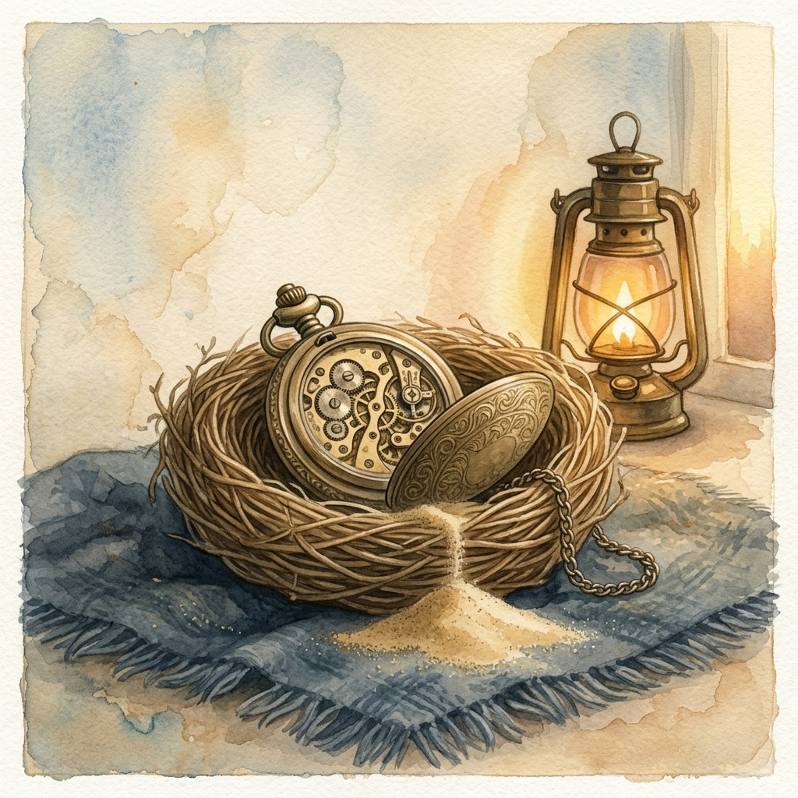
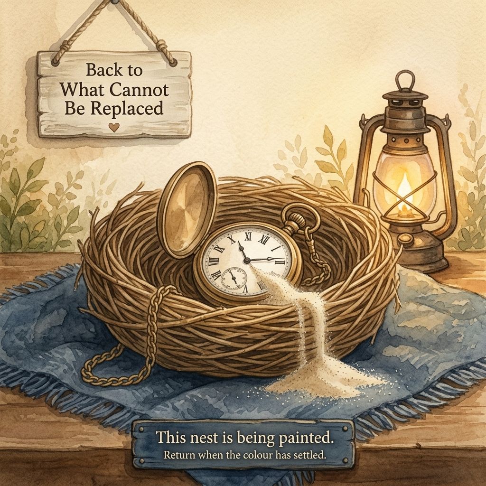
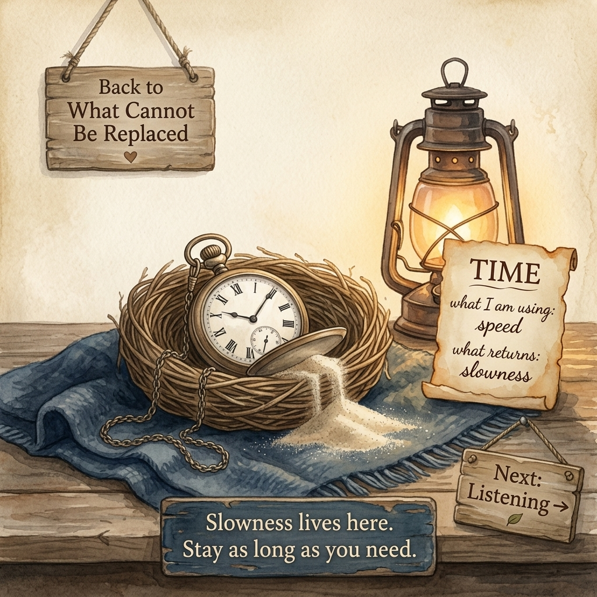

What Cannot Be Replaced · Image lock review

Variant 1 (base)

Variant 2

Variant 3
Of the 24 nest paintings, only W1 · Time has alternates. The other 23 each have a single founder asset already mounted. Pick one variant — the chosen filename becomes the lock for this nest.